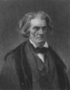
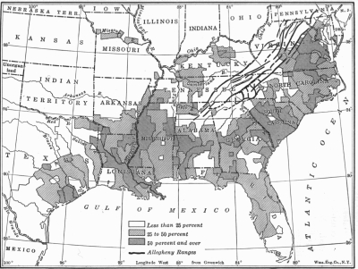
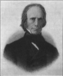
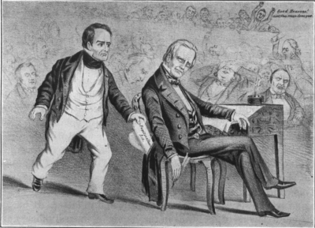
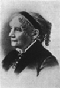

THE PLANTING SYSTEM AND NATIONAL POLITICS
James Madison, the father of the federal Constitution, after he had watched for many days the battle royal in the national convention of 1787, exclaimed that the contest was not between the large and the small states, but between the commercial North and the planting South. From the inauguration of Washington to the election of Lincoln the sectional conflict, discerned by this penetrating thinker, exercised a profound influence on the course of American politics. It was latent during the "era of good feeling" when the Jeffersonian Republicans adopted Federalist policies; it flamed up in the contest between the Democrats and Whigs. Finally it raged in the angry political quarrel which culminated in the Civil War.
Slavery—North and South
The Decline of Slavery in the North. —At the time of the adoption of the Constitution, slavery was lawful in all the Northern states except Massachusetts. There were almost as many bondmen in New York as in Georgia. New Jersey had more than Delaware or Tennessee, indeed nearly as many as both combined. All told, however, there were only about forty thousand in the North as against nearly seven hundred thousand in the South. Moreover, most of the Northern slaves were domestic servants, not laborers necessary to keep mills going or fields under cultivation.
There was, in the North, a steadily growing moral sentiment against the system. Massachusetts abandoned it in 1780. In the same year, Pennsylvania provided for gradual emancipation. New Hampshire, where there had been only a handful, Connecticut with a few thousand domestics, and New Jersey early followed these examples. New York, in 1799, declared that all children born of slaves after July 4 of that year should be free, though held for a term as apprentices; and in 1827 it swept away the last vestiges of slavery. So with the passing of the generation that had framed the Constitution, chattel servitude disappeared in the commercial states, leaving behind only such discriminations as disfranchisement or high property qualifications on colored voters.
The Growth of Northern Sentiment against Slavery. —In both sections of the country there early existed, among those more or less philosophically inclined, a strong opposition to slavery on moral as well as economic grounds. In the constitutional convention of 1787, Gouverneur Morris had vigorously condemned it and proposed that the whole country should bear the cost of abolishing it. About the same
time a society for promoting the abolition of slavery, under the presidency of Benjamin Franklin, laid before Congress a petition that serious attention be given to the emancipation of "those unhappy men who alone in this land of freedom are degraded into perpetual bondage." When Congress, acting on the recommendations of President Jefferson, provided for the abolition of the foreign slave trade on January 1, 1808, several Northern members joined with Southern members in condemning the system as well as the trade. Later, colonization societies were formed to encourage the emancipation of slaves and their return to Africa. James Madison was president and Henry Clay vice president of such an organization.
The anti-slavery sentiment of which these were the signs was nevertheless confined to narrow circles and bore no trace of bitterness. "We consider slavery your calamity, not your crime," wrote a distinguished Boston clergyman to his Southern brethren, "and we will share with you the burden of putting an end to it.
We will consent that the public lands shall be appropriated to this object.... I deprecate everything which sows discord and exasperating sectional animosities."
Uncompromising Abolition. —In a little while the spirit of generosity was gone. Just as Jacksonian Democracy rose to power there appeared a new kind of anti-slavery doctrine—the dogmatism of the abolition agitator. For mild speculation on the evils of the system was substituted an imperious and belligerent demand for instant emancipation. If a date must be fixed for its appearance, the year 1831 may be taken when William Lloyd Garrison founded in Boston his anti-slavery paper, The Liberator. With singleness of purpose and utter contempt for all opposing opinions and arguments, he pursued his course of passionate denunciation. He apologized for having ever "assented to the popular but pernicious doctrine of gradual abolition." He chose for his motto: "Immediate and unconditional emancipation!" He promised his readers that he would be "harsh as truth and uncompromising as justice"; that he would not "think or speak or write with moderation." Then he flung out his defiant call: "I am in earnest—I will not equivocate—I will not excuse—I will not retreat a single inch—and I will be heard....
'Such is the vow I take, so help me God.'"
Though Garrison complained that "the apathy of the people is enough to make every statue leap from its pedestal," he soon learned how alive the masses were to the meaning of his propaganda. Abolition orators were stoned in the street and hissed from the platform. Their meeting places were often attacked and sometimes burned to the ground. Garrison himself was assaulted in the streets of Boston, finding refuge from the angry mob behind prison bars. Lovejoy, a publisher in Alton, Illinois, for his willingness to give abolition a fair hearing, was brutally murdered; his printing press was broken to pieces as a warning to all those who disturbed the nation's peace of mind. The South, doubly frightened by a slave revolt in 1831
which ended in the murder of a number of men, women, and children, closed all discussion of slavery in that section. "Now," exclaimed Calhoun, "it is a question which admits of neither concession nor compromise."
As the opposition hardened, the anti-slavery agitation gathered in force and intensity. Whittier blew his blast from the New England hills:
"No slave-hunt in our
borders—no pirate on our
strand;
No fetters in the Bay State—no
slave upon our land."
Lowell, looking upon the espousal of a great cause as the noblest aim of his art, ridiculed and excoriated bondage in the South. Those abolitionists, not gifted as speakers or writers, signed petitions against slavery and poured them in upon Congress. The flood of them was so continuous that the House of Representatives, forgetting its traditions, adopted in 1836 a "gag rule" which prevented the reading of

appeals and consigned them to the waste basket. Not until the Whigs were in power nearly ten years later was John Quincy Adams able, after a relentless campaign, to carry a motion rescinding the rule.
How deep was the impression made upon the country by this agitation for immediate and unconditional emancipation cannot be measured. If the popular vote for those candidates who opposed not slavery, but its extension to the territories, be taken as a standard, it was slight indeed. In 1844, the Free Soil candidate, Birney, polled 62,000 votes out of over a million and a half; the Free Soil vote of the next campaign went beyond a quarter of a million, but the increase was due to the strength of the leader, Martin Van Buren; four years afterward it receded to 156,000, affording all the outward signs for the belief that the pleas of the abolitionist found no widespread response among the people. Yet the agitation undoubtedly ran deeper than the ballot box. Young statesmen of the North, in whose hands the destiny of frightful years was to lie, found their indifference to slavery broken and their consciences stirred by the unending appeal and the tireless reiteration. Charles Sumner afterward boasted that he read the Liberator two years before Wendell Phillips, the young Boston lawyer who cast aside his profession to take up the dangerous cause.
Early Southern Opposition to Slavery. —In the South, the sentiment against slavery was strong; it led some to believe that it would also come to an end there in due time. Washington disliked it and directed in his will that his own slaves should be set free after the death of his wife. Jefferson, looking into the future, condemned the system by which he also lived, saying: "Can the liberties of a nation be thought secure when we have removed their only firm basis, a conviction in the minds of the people that their liberties are the gift of God? Are they not to be violated but with His wrath? Indeed I tremble for my country when I reflect that God is just; that His justice cannot sleep forever." Nor did Southern men confine their sentiments to expressions of academic opinion. They accepted in 1787 the Ordinance which excluded slavery from the Northwest territory forever and also the Missouri Compromise, which shut it out of a vast section of the Louisiana territory.
The Revolution in the Slave System. —Among the representatives of South Carolina and Georgia, however, the anti-slavery views of Washington and Jefferson were by no means approved; and the drift of Southern economy was decidedly in favor of extending and perpetuating, rather than abolishing, the system of chattel servitude. The invention of the cotton gin and textile machinery created a market for cotton which the planters, with all their skill and energy, could hardly supply. Almost every available acre was brought under cotton culture as the small farmers were driven steadily from the seaboard into the uplands or to the Northwest.
The demand for slaves to till the swiftly expanding fields was enormous. The number of bondmen rose from 700,000 in Washington's day to more than three millions in 1850. At the same time slavery itself was transformed. Instead of the homestead where the same family of masters kept the same families of slaves from generation to generation, came the plantation system of the Far South and Southwest where masters were ever moving and ever extending their holdings of lands and slaves. This in turn reacted on the older South where the raising of slaves for the market became a regular and highly profitable business.
From an old print
John C. Calhoun
Slavery Defended as a Positive Good. —As the abolition agitation increased and the planting system expanded, apologies for slavery became fainter and fainter in the South. Then apologies were superseded by claims that slavery was a beneficial scheme of labor control. Calhoun, in a famous speech in the Senate in 1837, sounded the new note by declaring slavery "instead of an evil, a good—a positive good." His reasoning was as follows: in every civilized society one portion of the community must live on the labor of another; learning, science, and the arts are built upon leisure; the African slave, kindly treated by his master and mistress and looked after in his old age, is better off than the free laborers of Europe; and under the slave system conflicts between capital and labor are avoided. The advantages of slavery in this respect, he concluded, "will become more and more manifest, if left undisturbed by interference from without, as the country advances in wealth and numbers."
Slave Owners Dominate Politics. —The new doctrine of Calhoun was eagerly seized by the planters as they came more and more to overshadow the small farmers of the South and as they beheld the menace of abolition growing upon the horizon. It formed, as they viewed matters, a moral defense for their labor system—sound, logical, invincible. It warranted them in drawing together for the protection of an institution so necessary, so inevitable, so beneficent.
Though in 1850 the slave owners were only about three hundred and fifty thousand in a national population of nearly twenty million whites, they had an influence all out of proportion to their numbers.
They were knit together by the bonds of a common interest. They had leisure and wealth. They could travel and attend conferences and conventions. Throughout the South and largely in the North, they had the press, the schools, and the pulpits on their side. They formed, as it were, a mighty union for the protection and advancement of their common cause. Aided by those mechanics and farmers of the North who stuck by Jacksonian Democracy through thick and thin, the planters became a power in the federal government. "We nominate Presidents," exultantly boasted a Richmond newspaper; "the North elects them."
This jubilant Southern claim was conceded by William H. Seward, a Republican Senator from New York, in a speech describing the power of slavery in the national government. "A party," he said, "is in one sense a joint stock association, in which those who contribute most direct the action and management of the concern.... The slaveholders, contributing in an overwhelming proportion to the strength of the Democratic party, necessarily dictate and prescribe its policy." He went on: "The slaveholding class has become the governing power in each of the slaveholding states and it practically chooses thirty of the sixty-two members of the Senate, ninety of the two hundred and thirty-three members of the House of Representatives, and one hundred and five of the two hundred and ninety-five electors of President and Vice-President of the United States." Then he considered the slave power in the Supreme Court. "That tribunal," he exclaimed, "consists of a chief justice and eight associate justices. Of these, five were called from slave states and four from free states. The opinions and bias of each of them were carefully considered by the President and Senate when he was appointed. Not one of them was found wanting in soundness of politics, according to the slaveholder's exposition of the Constitution." Such was the Northern view of the planting interest that, from the arena of national politics, challenged the whole country in 1860.

Distribution of Slaves in the Southern States
Slavery in National Politics
National Aspects of Slavery. —It may be asked why it was that slavery, founded originally on state law and subject to state government, was drawn into the current of national affairs. The answer is simple.
There were, in the first place, constitutional reasons. The Congress of the United States had to make all needful rules for the government of the territories, the District of Columbia, the forts and other property under national authority; so it was compelled to determine whether slavery should exist in the places subject to its jurisdiction. Upon Congress was also conferred the power of admitting new states; whenever a territory asked for admission, the issue could be raised as to whether slavery should be sanctioned or excluded. Under the Constitution, provision was made for the return of runaway slaves; Congress had the power to enforce this clause by appropriate legislation. Since the control of the post office was vested in the federal government, it had to face the problem raised by the transmission of abolition literature through the mails. Finally citizens had the right of petition; it inheres in all free government and it is expressly guaranteed by the first amendment to the Constitution. It was therefore legal for abolitionists to present to Congress their petitions, even if they asked for something which it had no right to grant. It was thus impossible, constitutionally, to draw a cordon around the slavery issue and confine the discussion of it to state politics.
There were, in the second place, economic reasons why slavery was inevitably drawn into the national sphere. It was the basis of the planting system which had direct commercial relations with the North and European countries; it was affected by federal laws respecting tariffs, bounties, ship subsidies, banking, and kindred matters. The planters of the South, almost without exception, looked upon the protective tariff as a tribute laid upon them for the benefit of Northern industries. As heavy borrowers of money in the North, they were generally in favor of "easy money," if not paper currency, as an aid in the repayment of their debts. This threw most of them into opposition to the Whig program for a United States Bank. All financial aids to American shipping they stoutly resisted, preferring to rely upon the cheaper service rendered by English shippers. Internal improvements, those substantial ties that were binding the West to the East and turning the traffic from New Orleans to Philadelphia and New York, they viewed with alarm.
Free homesteads from the public lands, which tended to overbalance the South by building free states, became to them a measure dangerous to their interests. Thus national economic policies, which could not by any twist or turn be confined to state control, drew the slave system and its defenders into the political
conflict that centered at Washington.
Slavery and the Territories—the Missouri Compromise (1820). —Though men continually talked about
"taking slavery out of politics," it could not be done. By 1818 slavery had become so entrenched and the anti-slavery sentiment so strong, that Missouri's quest for admission brought both houses of Congress into a deadlock that was broken only by compromise. The South, having half the Senators, could prevent the admission of Missouri stripped of slavery; and the North, powerful in the House of Representatives, could keep Missouri with slavery out of the union indefinitely. An adjustment of pretensions was the last resort.
Maine, separated from the parent state of Massachusetts, was brought into the union with freedom and Missouri with bondage. At the same time it was agreed that the remainder of the vast Louisiana territory north of the parallel of 36° 30' should be, like the old Northwest, forever free; while the southern portion was left to slavery. In reality this was an immense gain for liberty. The area dedicated to free farmers was many times greater than that left to the planters. The principle was once more asserted that Congress had full power to prevent slavery in the territories.
The Missouri Compromise
The Territorial Question Reopened by the Wilmot Proviso. —To the Southern leaders, the annexation of Texas and the conquest of Mexico meant renewed security to the planting interest against the increasing wealth and population of the North. Texas, it was said, could be divided into four slave states. The new territories secured by the treaty of peace with Mexico contained the promise of at least three more. Thus, as each new free soil state knocked for admission into the union, the South could demand as the price of its consent a new slave state. No wonder Southern statesmen saw, in the annexation of Texas and the conquest of Mexico, slavery and King Cotton triumphant—secure for all time against adverse legislation.
Northern leaders were equally convinced that the Southern prophecy was true. Abolitionists and moderate opponents of slavery alike were in despair. Texas, they lamented, would fasten slavery upon the country forevermore. "No living man," cried one, "will see the end of slavery in the United States!"
It so happened, however, that the events which, it was thought, would secure slavery let loose a storm against it. A sign appeared first on August 6, 1846, only a few months after war was declared on Mexico.
On that day, David Wilmot, a Democrat from Pennsylvania, introduced into the House of Representatives a resolution to the effect that, as an express and fundamental condition to the acquisition of any territory from the republic of Mexico, slavery should be forever excluded from every part of it. "The Wilmot Proviso," as the resolution was popularly called, though defeated on that occasion, was a challenge to the South.
The South answered the challenge. Speaking in the House of Representatives, Robert Toombs of Georgia boldly declared: "In the presence of the living God, if by your legislation you seek to drive us from the territories of California and New Mexico ... I am for disunion." South Carolina announced that the day for talk had passed and the time had come to join her sister states "in resisting the application of the Wilmot Proviso at any and all hazards." A conference, assembled at Jackson, Mississippi, in the autumn of 1849, called a general convention of Southern states to meet at Nashville the following summer. The avowed purpose was to arrest "the course of aggression" and, if that was not possible, to provide "in the last resort for their separate welfare by the formation of a compact and union that will afford protection to their liberties and rights." States that had spurned South Carolina's plea for nullification in 1832 responded to this new appeal with alacrity—an augury of the secession to come.

From an old print
Henry Clay
The Great Debate of 1850. —The temper of the country was white hot when Congress convened in December, 1849. It was a memorable session, memorable for the great men who took part in the debates and memorable for the grand Compromise of 1850 which it produced. In the Senate sat for the last time three heroic figures: Webster from the North, Calhoun from the South, and Clay from a border state. For nearly forty years these three had been leaders of men. All had grown old and gray in service. Calhoun was already broken in health and in a few months was to be borne from the political arena forever. Clay and Webster had but two more years in their allotted span.
Experience, learning, statecraft—all these things they now marshaled in a mighty effort to solve the slavery problem. On January 29, 1850, Clay offered to the Senate a compromise granting concessions to both sides; and a few days later, in a powerful oration, he made a passionate appeal for a union of hearts through mutual sacrifices. Calhoun relentlessly demanded the full measure of justice for the South: equal rights in the territories bought by common blood; the return of runaway slaves as required by the Constitution; the suppression of the abolitionists; and the restoration of the balance of power between the North and the South. Webster, in his notable "Seventh of March speech," condemned the Wilmot Proviso, advocated a strict enforcement of the fugitive slave law, denounced the abolitionists, and made a final plea for the Constitution, union, and liberty. This was the address which called forth from Whittier the poem,
"Ichabod," deploring the fall of the mighty one whom he thought lost to all sense of faith and honor.
The Terms of the Compromise of 1850. —When the debates were closed, the results were totaled in a series of compromise measures, all of which were signed in September, 1850, by the new President, Millard Fillmore, who had taken office two months before on the death of Zachary Taylor. By these acts the boundaries of Texas were adjusted and the territory of New Mexico created, subject to the provision that all or any part of it might be admitted to the union "with or without slavery as their constitution may provide at the time of their admission." The Territory of Utah was similarly organized with the same conditions as to slavery, thus repudiating the Wilmot Proviso without guaranteeing slavery to the planters.
California was admitted as a free state under a constitution in which the people of the territory had themselves prohibited slavery.
The slave trade was abolished in the District of Columbia, but slavery itself existed as before at the capital of the nation. This concession to anti-slavery sentiment was more than offset by a fugitive slave law, drastic in spirit and in letter. It placed the enforcement of its terms in the hands of federal officers appointed from Washington and so removed it from the control of authorities locally elected. It provided that masters or their agents, on filing claims in due form, might summarily remove their escaped slaves without affording their "alleged fugitives" the right of trial by jury, the right to witness, the right to offer any testimony in evidence. Finally, to "put teeth" into the act, heavy penalties were prescribed for all who obstructed or assisted in obstructing the enforcement of the law. Such was the Great Compromise of 1850.

An Old Cartoon Representing Webster "Stealing Clay's Thunder"
The Pro-slavery Triumph in the Election of 1852. —The results of the election of 1852 seemed to show conclusively that the nation was weary of slavery agitation and wanted peace. Both parties, Whigs and Democrats, endorsed the fugitive slave law and approved the Great Compromise. The Democrats, with Franklin Pierce as their leader, swept the country against the war hero, General Winfield Scott, on whom the Whigs had staked their hopes. Even Webster, broken with grief at his failure to receive the nomination, advised his friends to vote for Pierce and turned away from politics to meditate upon approaching death.
The verdict of the voters would seem to indicate that for the time everybody, save a handful of disgruntled agitators, looked upon Clay's settlement as the last word. "The people, especially the business men of the country," says Elson, "were utterly weary of the agitation and they gave their suffrages to the party that promised them rest." The Free Soil party, condemning slavery as "a sin against God and a crime against man," and advocating freedom for the territories, failed to carry a single state. In fact it polled fewer votes than it had four years earlier—156,000 as against nearly 3,000,000, the combined vote of the Whigs and Democrats. It is not surprising, therefore, that President Pierce, surrounded in his cabinet by strong Southern sympathizers, could promise to put an end to slavery agitation and to crush the abolition movement in the bud.
Anti-slavery Agitation Continued. —The promise was more difficult to fulfill than to utter. In fact, the vigorous execution of one measure included in the Compromise—the fugitive slave law—only made matters worse. Designed as security for the planters, it proved a powerful instrument in their undoing.
Slavery five hundred miles away on a Louisiana plantation was so remote from the North that only the strongest imagination could maintain a constant rage against it. "Slave catching," "man hunting" by federal officers on the streets of Philadelphia, New York, Boston, Chicago, or Milwaukee and in the hamlets and villages of the wide-stretching farm lands of the North was another matter. It brought the most odious aspects of slavery home to thousands of men and women who would otherwise have been indifferent to the system. Law-abiding business men, mechanics, farmers, and women, when they saw peaceful negroes, who had resided in their neighborhoods perhaps for years, torn away by federal officers and carried back to bondage, were transformed into enemies of the law. They helped slaves to escape; they snatched them away from officers who had captured them; they broke open jails and carried fugitives off to Canada.
Assistance to runaway slaves, always more or less common in the North, was by this time organized into a system. Regular routes, known as "underground railways," were laid out across the free states into Canada, and trusted friends of freedom maintained "underground stations" where fugitives were concealed in the

daytime between their long night journeys. Funds were raised and secret agents sent into the South to help negroes to flee. One negro woman, Harriet Tubman, "the Moses of her people," with headquarters at Philadelphia, is accredited with nineteen invasions into slave territory and the emancipation of three hundred negroes. Those who worked at this business were in constant peril. One underground operator, Calvin Fairbank, spent nearly twenty years in prison for aiding fugitives from justice. Yet perils and prisons did not stay those determined men and women who, in obedience to their consciences, set themselves to this lawless work.
Harriet Beecher Stowe
From thrilling stories of adventure along the underground railways came some of the scenes and themes of the novel by Harriet Beecher Stowe, "Uncle Tom's Cabin," published two years after the Compromise of 1850. Her stirring tale set forth the worst features of slavery in vivid word pictures that caught and held the attention of millions of readers. Though the book was unfair to the South and was denounced as a hideous distortion of the truth, it was quickly dramatized and played in every city and town throughout the North.
Topsy, Little Eva, Uncle Tom, the fleeing slave, Eliza Harris, and the cruel slave driver, Simon Legree, with his baying blood hounds, became living specters in many a home that sought to bar the door to the
"unpleasant and irritating business of slavery agitation."
The Drift of Events toward the Irrepressible Conflict
Repeal of the Missouri Compromise. —To practical men, after all, the "rub-a-dub" agitation of a few abolitionists, an occasional riot over fugitive slaves, and the vogue of a popular novel seemed of slight or transient importance. They could point with satisfaction to the election returns of 1852; but their very security was founded upon shifting sands. The magnificent triumph of the pro-slavery Democrats in 1852
brought a turn in affairs that destroyed the foundations under their feet. Emboldened by their own strength and the weakness of their opponents, they now dared to repeal the Missouri Compromise. The leader in this fateful enterprise was Stephen A. Douglas, Senator from Illinois, and the occasion for the deed was the demand for the organization of territorial government in the regions west of Iowa and Missouri.
Douglas, like Clay and Webster before him, was consumed by a strong passion for the presidency, and, to reach his goal, it was necessary to win the support of the South. This he undoubtedly sought to do when he introduced on January 4, 1854, a bill organizing the Nebraska territory on the principle of the Compromise of 1850; namely, that the people in the territory might themselves decide whether they would have slavery or not. Unwittingly the avalanche was started.
After a stormy debate, in which important amendments were forced on Douglas, the Kansas-Nebraska Bill became a law on May 30, 1854. The measure created two territories, Kansas and Nebraska, and provided that they, or territories organized out of them, could come into the union as states "with or without slavery as their constitutions may prescribe at the time of their admission." Not content with this, the law went on to declare the Missouri Compromise null and void as being inconsistent with the principle of non-intervention by Congress with slavery in the states and territories. Thus by a single blow the very heart of
the continent, dedicated to freedom by solemn agreement, was thrown open to slavery. A desperate struggle between slave owners and the advocates of freedom was the outcome in Kansas.
If Douglas fancied that the North would receive the overthrow of the Missouri Compromise in the same temper that it greeted Clay's settlement, he was rapidly disillusioned. A blast of rage, terrific in its fury, swept from Maine to Iowa. Staid old Boston hanged him in effigy with an inscription—"Stephen A.
Douglas, author of the infamous Nebraska bill: the Benedict Arnold of 1854." City after city burned him in effigy until, as he himself said, he could travel from the Atlantic coast to Chicago in the light of the fires.
Thousands of Whigs and Free-soil Democrats deserted their parties which had sanctioned or at least tolerated the Kansas-Nebraska Bill, declaring that the startling measure showed an evident resolve on the part of the planters to rule the whole country. A gage of defiance was thrown down to the abolitionists. An issue was set even for the moderate and timid who had been unmoved by the agitation over slavery in the Far South. That issue was whether slavery was to be confined within its existing boundaries or be allowed to spread without interference, thereby placing the free states in the minority and surrendering the federal government wholly to the slave power.
The Rise of the Republican Party. —Events of terrible significance, swiftly following, drove the country like a ship before a gale straight into civil war. The Kansas-Nebraska Bill rent the old parties asunder and called into being the Republican party. While that bill was pending in Congress, many Northern Whigs and Democrats had come to the conclusion that a new party dedicated to freedom in the territories must follow the repeal of the Missouri Compromise. Several places claim to be the original home of the Republican party; but historians generally yield it to Wisconsin. At Ripon in that state, a mass meeting of Whigs and Democrats assembled in February, 1854, and resolved to form a new party if the Kansas-Nebraska Bill should pass. At a second meeting a fusion committee representing Whigs, Free Soilers, and Democrats was formed and the name Republican—the name of Jefferson's old party—was selected. All over the country similar meetings were held and political committees were organized.
When the presidential campaign of 1856 began the Republicans entered the contest. After a preliminary conference in Pittsburgh in February, they held a convention in Philadelphia at which was drawn up a platform opposing the extension of slavery to the territories. John C. Frémont, the distinguished explorer, was named for the presidency. The results of the election were astounding as compared with the Free-soil failure of the preceding election. Prominent men like Longfellow, Washington Irving, William Cullen Bryant, Ralph Waldo Emerson, and George William Curtis went over to the new party and 1,341,264
votes were rolled up for "free labor, free speech, free men, free Kansas, and Frémont." Nevertheless the victory of the Democrats was decisive. Their candidate, James Buchanan of Pennsylvania, was elected by a majority of 174 to 114 electoral votes.
Slave and Free Soil on Eve of Civil War
The Dred Scott Decision (1857). —In his inaugural, Buchanan vaguely hinted that in a forthcoming decision the Supreme Court would settle one of the vital questions of the day. This was a reference to the Dred Scott case then pending. Scott was a slave who had been taken by his master into the upper Louisiana territory, where freedom had been established by the Missouri Compromise, and then carried back into his old state of Missouri. He brought suit for his liberty on the ground that his residence in the free territory made him free. This raised the question whether the law of Congress prohibiting slavery north of 36° 30' was authorized by the federal Constitution or not. The Court might have avoided answering it by saying that even though Scott was free in the territory, he became a slave again in Missouri by virtue of the law of that state. The Court, however, faced the issue squarely. It held that Scott had not been free anywhere and that, besides, the Missouri Compromise violated the Constitution and was
The decision was a triumph for the South. It meant that Congress after all had no power to abolish slavery in the territories. Under the decree of the highest court in the land, that could be done only by an amendment to the Constitution which required a two-thirds vote in Congress and the approval of three-fourths of the states. Such an amendment was obviously impossible—the Southern states were too numerous; but the Republicans were not daunted. "We know," said Lincoln, "the Court that made it has often overruled its own decisions and we shall do what we can to have it overrule this." Legislatures of Northern states passed resolutions condemning the decision and the Republican platform of 1860
characterized the dogma that the Constitution carried slavery into the territories as "a dangerous political heresy at variance with the explicit provisions of that instrument itself ... with legislative and judicial precedent ... revolutionary in tendency and subversive of the peace and harmony of the country."
The Panic of 1857. —In the midst of the acrimonious dispute over the Dred Scott decision, came one of the worst business panics which ever afflicted the country. In the spring and summer of 1857, fourteen railroad corporations, including the Erie, Michigan Central, and the Illinois Central, failed to meet their obligations; banks and insurance companies, some of them the largest and strongest institutions in the North, closed their doors; stocks and bonds came down in a crash on the markets; manufacturing was paralyzed; tens of thousands of working people were thrown out of employment; "hunger meetings" of idle men were held in the cities and banners bearing the inscription, "We want bread," were flung out. In New York, working men threatened to invade the Council Chamber to demand "work or bread," and the frightened mayor called for the police and soldiers. For this distressing state of affairs many remedies were offered; none with more zeal and persistence than the proposal for a higher tariff to take the place of the law of March, 1857, a Democratic measure making drastic reductions in the rates of duty. In the manufacturing districts of the North, the panic was ascribed to the "Democratic assault on business." So an old issue was again vigorously advanced, preparatory to the next presidential campaign.
The Lincoln-Douglas Debates. —The following year the interest of the whole country was drawn to a series of debates held in Illinois by Lincoln and Douglas, both candidates for the United States Senate. In the course of his campaign Lincoln had uttered his trenchant saying that "a house divided against itself cannot stand. I believe this government cannot endure permanently half slave and half free." At the same time he had accused Douglas, Buchanan, and the Supreme Court of acting in concert to make slavery national. This daring statement arrested the attention of Douglas, who was making his campaign on the doctrine of "squatter sovereignty;" that is, the right of the people of each territory "to vote slavery up or down." After a few long-distance shots at each other, the candidates agreed to meet face to face and discuss the issues of the day. Never had such crowds been seen at political meetings in Illinois. Farmers deserted their plows, smiths their forges, and housewives their baking to hear "Honest Abe" and "the Little Giant."
The results of the series of debates were momentous. Lincoln clearly defined his position. The South, he admitted, was entitled under the Constitution to a fair, fugitive slave law. He hoped that there might be no new slave states; but he did not see how Congress could exclude the people of a territory from admission as a state if they saw fit to adopt a constitution legalizing the ownership of slaves. He favored the gradual abolition of slavery in the District of Columbia and the total exclusion of it from the territories of the United States by act of Congress.
Moreover, he drove Douglas into a hole by asking how he squared "squatter sovereignty" with the Dred Scott decision; how, in other words, the people of a territory could abolish slavery when the Court had declared that Congress, the superior power, could not do it under the Constitution? To this baffling question Douglas lamely replied that the inhabitants of a territory, by "unfriendly legislation," might make property in slaves insecure and thus destroy the institution. This answer to Lincoln's query alienated many Southern Democrats who believed that the Dred Scott decision settled the question of slavery in the
territories for all time. Douglas won the election to the Senate; but Lincoln, lifted into national fame by the debates, beat him in the campaign for President two years later.
John Brown's Raid. —To the abolitionists the line of argument pursued by Lincoln, including his proposal to leave slavery untouched in the states where it existed, was wholly unsatisfactory. One of them, a grim and resolute man, inflamed by a hatred for slavery in itself, turned from agitation to violence.
"These men are all talk; what is needed is action—action!" So spoke John Brown of New York. During the sanguinary struggle in Kansas he hurried to the frontier, gun and dagger in hand, to help drive slave owners from the free soil of the West. There he committed deeds of such daring and cruelty that he was outlawed and a price put upon his head. Still he kept on the path of "action." Aided by funds from Northern friends, he gathered a small band of his followers around him, saying to them: "If God be for us, who can be against us?" He went into Virginia in the autumn of 1859, hoping, as he explained, "to effect a mighty conquest even though it be like the last victory of Samson." He seized the government armory at Harper's Ferry, declared free the slaves whom he found, and called upon them to take up arms in defense of their liberty. His was a hope as forlorn as it was desperate. Armed forces came down upon him and, after a hard battle, captured him. Tried for treason, Brown was condemned to death. The governor of Virginia turned a deaf ear to pleas for clemency based on the ground that the prisoner was simply a lunatic. "This is a beautiful country," said the stern old Brown glancing upward to the eternal hills on his way to the gallows, as calmly as if he were returning home from a long journey. "So perish all such enemies of Virginia. All such enemies of the Union. All such foes of the human race," solemnly announced the executioner as he fulfilled the judgment of the law.
The raid and its grim ending deeply moved the country. Abolitionists looked upon Brown as a martyr and tolled funeral bells on the day of his execution. Longfellow wrote in his diary: "This will be a great day in our history; the date of a new revolution as much needed as the old one." Jefferson Davis saw in the affair
"the invasion of a state by a murderous gang of abolitionists bent on inciting slaves to murder helpless women and children"—a crime for which the leader had met a felon's death. Lincoln spoke of the raid as absurd, the deed of an enthusiast who had brooded over the oppression of a people until he fancied himself commissioned by heaven to liberate them—an attempt which ended in "little else than his own execution."
To Republican leaders as a whole, the event was very embarrassing. They were taunted by the Democrats with responsibility for the deed. Douglas declared his "firm and deliberate conviction that the Harper's Ferry crime was the natural, logical, inevitable result of the doctrines and teachings of the Republican party." So persistent were such attacks that the Republicans felt called upon in 1860 to denounce Brown's raid "as among the gravest of crimes."
The Democrats Divided. —When the Democratic convention met at Charleston in the spring of 1860, a few months after Brown's execution, it soon became clear that there was danger ahead. Between the extreme slavery advocates of the Far South and the so-called pro-slavery Democrats of the Douglas type, there was a chasm which no appeals to party loyalty could bridge. As the spokesman of the West, Douglas knew that, while the North was not abolitionist, it was passionately set against an extension of slavery into the territories by act of Congress; that squatter sovereignty was the mildest kind of compromise acceptable to the farmers whose votes would determine the fate of the election. Southern leaders would not accept his opinion. Yancey, speaking for Alabama, refused to palter with any plan not built on the proposition that slavery was in itself right. He taunted the Northern Democrats with taking the view that slavery was wrong, but that they could not do anything about it. That, he said, was the fatal error—the cause of all discord, the source of "Black Republicanism," as well as squatter sovereignty. The gauntlet was thus thrown down at the feet of the Northern delegates: "You must not apologize for slavery; you must declare it right; you must advocate its extension." The challenge, so bluntly put, was as bluntly answered.
"Gentlemen of the South," responded a delegate from Ohio, "you mistake us. You mistake us. We will not do it."
For ten days the Charleston convention wrangled over the platform and balloted for the nomination of a
candidate. Douglas, though in the lead, could not get the two-thirds vote required for victory. For more than fifty times the roll of the convention was called without a decision. Then in sheer desperation the convention adjourned to meet later at Baltimore. When the delegates again assembled, their passions ran as high as ever. The division into two irreconcilable factions was unchanged. Uncompromising delegates from the South withdrew to Richmond, nominated John C. Breckinridge of Kentucky for President, and put forth a platform asserting the rights of slave owners in the territories and the duty of the federal government to protect them. The delegates who remained at Baltimore nominated Douglas and endorsed his doctrine of squatter sovereignty.
The Constitutional Union Party. —While the Democratic party was being disrupted, a fragment of the former Whig party, known as the Constitutional Unionists, held a convention at Baltimore and selected national candidates: John Bell from Tennessee and Edward Everett from Massachusetts. A melancholy interest attached to this assembly. It was mainly composed of old men whose political views were those of Clay and Webster, cherished leaders now dead and gone. In their platform they sought to exorcise the evil spirit of partisanship by inviting their fellow citizens to "support the Constitution of the country, the union of the states, and the enforcement of the laws." The party that campaigned on this grand sentiment only drew laughter from the Democrats and derision from the Republicans and polled less than one-fourth the votes.
The Republican Convention. —With the Whigs definitely forced into a separate group, the Republican convention at Chicago was fated to be sectional in character, although five slave states did send delegates.
As the Democrats were split, the party that had led a forlorn hope four years before was on the high road to success at last. New and powerful recruits were found. The advocates of a high protective tariff and the friends of free homesteads for farmers and workingmen mingled with enthusiastic foes of slavery. While still firm in their opposition to slavery in the territories, the Republicans went on record in favor of a homestead law granting free lands to settlers and approved customs duties designed "to encourage the development of the industrial interests of the whole country." The platform was greeted with cheers which, according to the stenographic report of the convention, became loud and prolonged as the protective tariff and homestead planks were read.
Having skillfully drawn a platform to unite the North in opposition to slavery and the planting system, the Republicans were also adroit in their selection of a candidate. The tariff plank might carry Pennsylvania, a Democratic state; but Ohio, Indiana, and Illinois were equally essential to success at the polls. The southern counties of these states were filled with settlers from Virginia, North Carolina, and Kentucky who, even if they had no love for slavery, were no friends of abolition. Moreover, remembering the old fight on the United States Bank in Andrew Jackson's day, they were suspicious of men from the East.
Accordingly, they did not favor the candidacy of Seward, the leading Republican statesman and "favorite son" of New York.
After much trading and discussing, the convention came to the conclusion that Abraham Lincoln of Illinois was the most "available" candidate. He was of Southern origin, born in Kentucky in 1809, a fact that told heavily in the campaign in the Ohio Valley. He was a man of the soil, the son of poor frontier parents, a pioneer who in his youth had labored in the fields and forests, celebrated far and wide as "honest Abe, the rail-splitter." It was well-known that he disliked slavery, but was no abolitionist. He had come dangerously near to Seward's radicalism in his "house-divided-against-itself" speech but he had never committed himself to the reckless doctrine that there was a "higher law" than the Constitution. Slavery in the South he tolerated as a bitter fact; slavery in the territories he opposed with all his strength. Of his sincerity there could be no doubt. He was a speaker and writer of singular power, commanding, by the use of simple and homely language, the hearts and minds of those who heard him speak or read his printed words. He had gone far enough in his opposition to slavery; but not too far. He was the man of the hour!
Amid lusty cheers from ten thousand throats, Lincoln was nominated for the presidency by the Republicans. In the ensuing election, he carried all the free states except New Jersey.
P.E. Chadwick, Causes of the Civil War (American Nation Series).
W.E. Dodd, Statesmen of the Old South.
E. Engle, Southern Sidelights (Sympathetic account of the Old South).
A.B. Hart, Slavery and Abolition (American Nation Series).
J.F. Rhodes, History of the United States, Vols. I and II.
T.C. Smith, Parties and Slavery (American Nation Series).
Questions
1. Trace the decline of slavery in the North and explain it.
2. Describe the character of early opposition to slavery.
3. What was the effect of abolition agitation?
4. Why did anti-slavery sentiment practically disappear in the South?
5. On what grounds did Calhoun defend slavery?
6. Explain how slave owners became powerful in politics.
7. Why was it impossible to keep the slavery issue out of national politics?
8. Give the leading steps in the long controversy over slavery in the territories.
9. State the terms of the Compromise of 1850 and explain its failure.
10. What were the startling events between 1850 and 1860?
11. Account for the rise of the Republican party. What party had used the title before?
12. How did the Dred Scott decision become a political issue?
13. What were some of the points brought out in the Lincoln-Douglas debates?
14. Describe the party division in 1860.
15. What were the main planks in the Republican platform?
Research Topics
The Extension of Cotton Planting. —Callender, Economic History of the United States, pp. 760-768.
Abolition Agitation. —McMaster, History of the People of the United States, Vol. VI, pp. 271-298.
Calhoun's Defense of Slavery. —Harding, Select Orations Illustrating American History, pp. 247-257.
The Compromise of 1850. —Clay's speech in Harding, Select Orations, pp. 267-289. The compromise laws in Macdonald, Documentary Source Book of American History, pp. 383-394. Narrative account in McMaster, Vol. VIII, pp. 1-55; Elson, History of the United States, pp. 540-548.
The Repeal of the Missouri Compromise. —McMaster, Vol. VIII, pp. 192-231; Elson, pp. 571-582.
The Dred Scott Case. —McMaster, Vol. VIII, pp. 278-282. Compare the opinion of Taney and the dissent of Curtis in Macdonald, Documentary Source Book, pp. 405-420; Elson, pp. 595-598.
The Lincoln-Douglas Debates. —Analysis of original speeches in Harding, Select Orations pp. 309-341; Elson, pp. 598-604.
Biographical Studies. —Calhoun, Clay, Webster, A.H. Stephens, Douglas, W.H. Seward, William Lloyd Garrison, Wendell Phillips, and Harriet Beecher Stowe.
{kind=link}
{kind=link}